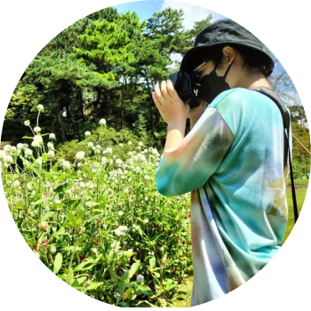
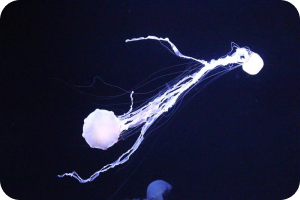

Profile
牧野 李香
普段はITを学んでおり、将来的にはプログラマーになるために
努力しています。
趣味は写真やライブに行くことで、特に風景写真を撮ることが好きです。休日にはDVDをみてリフレッシュしています。
よろしくお願いします！
生年月日
2005年11月19日
学校名
東京デザインテクノロジーセンター専門学校
学年／専攻
1年／ITプログラマー
ニックネーム
ももか
出身地
静岡県
長所
頭の回転が速い
短所
腹黒い
Favorite
好きなスポーツ
ソフトボール
好きな動物
ハムスター
好きなこと
写真
好きな飲み物
紅茶
好きな小説
二木先生
好きな場所
水族館
好きな音楽
ボカロ